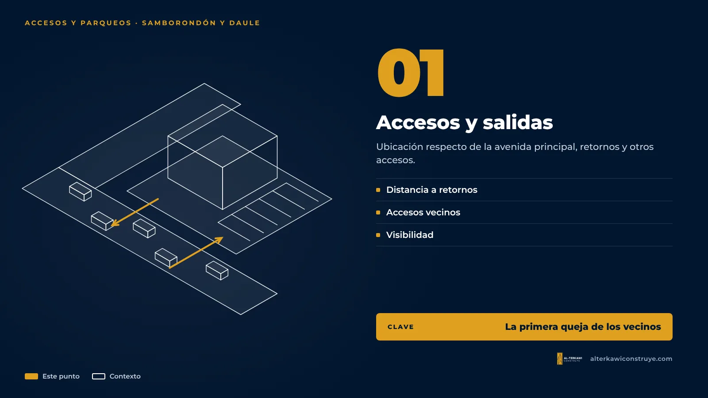
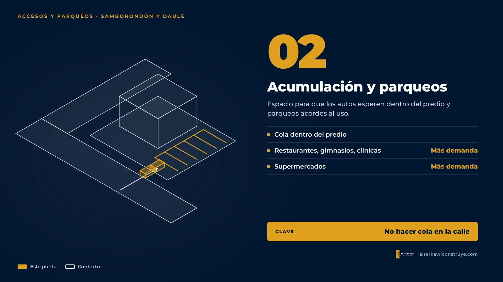
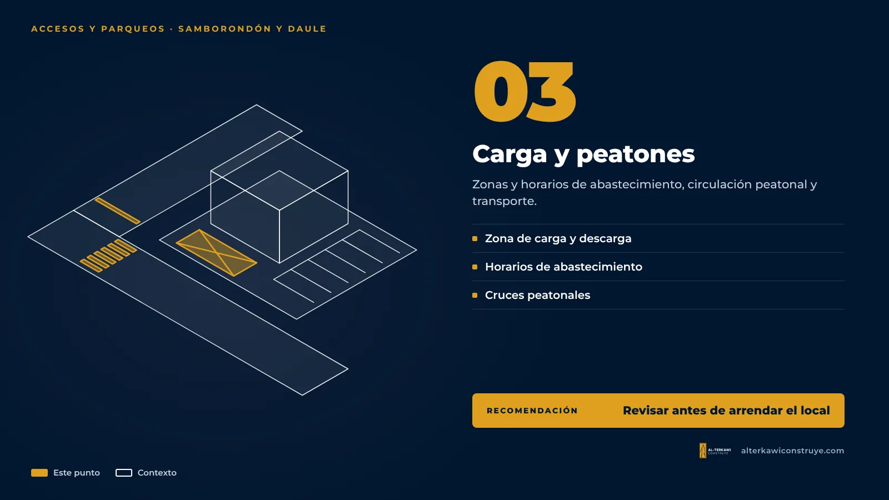

Plazas comerciales y locales en Samborondón y Daule: el tráfico también es parte del permiso

La Puntilla, en Samborondón, y La Aurora, en Daule, son dos de las zonas donde más abren locales las empresas que buscan al cliente de la vía a Samborondón y del eje Guayaquil–Daule. También son dos de las zonas con más quejas por tráfico. Eso convierte los accesos y los parqueos en un tema central del permiso.
El contexto
Según cifras del Municipio de Samborondón citadas por la prensa, el cantón tiene alrededor de 80 plazas comerciales y en un solo año se emitieron permisos para 30 edificaciones. Vecinos y especialistas en movilidad han advertido sobre la saturación de la avenida Samborondón, y la Dirección de Edificaciones ha respondido que cada proyecto se aprueba con estudios previos que evalúan su impacto. En La Aurora, el crecimiento de urbanizaciones y comercios genera una discusión parecida.
Para una empresa, la lectura práctica es simple: en estas zonas el municipio mira con lupa cómo entra y sale la gente de su proyecto.
Qué suelen revisar



Desliza para ver las 3 láminas →
A diferencia de Guayaquil, que tiene una ordenanza específica de impacto vial con umbrales por parqueaderos, Samborondón y Daule no fijan umbrales por número de parqueos, pero sí piden estudio de tráfico según el uso del proyecto. En Daule es un requisito especial del permiso para edificaciones con afluencia masiva de público (comercios, multifamiliares, salud, educación), aprobado por la ATM. En Samborondón se exige cuando el proyecto aumenta la intensidad o la densidad, y en usos de alto impacto como centros comerciales y gasolineras. El detalle está en ¿Es obligatorio el estudio de impacto vial en Daule y Samborondón?. Para locales pequeños que no entran en esos grupos, la dirección municipal igual revisa los accesos y los parqueos dentro del permiso, y los vecinos y administradores de urbanizaciones están muy pendientes; ahí recomendamos hacer el estudio de todas formas, porque ordena el diseño desde el inicio y da argumentos técnicos si el proyecto es cuestionado. Los puntos que conviene revisar son:
- Ubicación de accesos y salidas respecto de la avenida principal, retornos y otros accesos.
- Espacio de acumulación de vehículos dentro del predio para no hacer cola en la calle.
- Número de parqueaderos frente al uso (restaurantes, gimnasios, clínicas y supermercados demandan más).
- Zonas de carga y descarga y horarios de abastecimiento.
- Circulación peatonal y conexión con transporte.
Otros requisitos propios de estas zonas
- Samborondón: el registro del solar y las normas de edificación van antes del registro de construcción. En urbanizaciones privadas, los planos pasan también por la asociación de propietarios, y la constructora debe coordinar el ingreso de personal y los letreros de obra.
- Daule: el certificado de línea de fábrica define las condiciones del predio, y para edificaciones de tres o más pisos se exige una póliza a favor de terceros del 8 % del avalúo de la obra.
El detalle de ambos cantones está en Permisos de construcción en Daule y Samborondón.
Recomendación
Antes de firmar el arriendo o la compra de un local en estas zonas, revise con un profesional si los accesos y los parqueos del predio son suficientes para su tipo de negocio. Es más barato descartar un local en la etapa de búsqueda que rediseñar un proyecto observado.
Siga leyendo
¿Evalúa un local en La Puntilla o La Aurora?
Le ayudamos a revisar el predio antes de decidir.

Arquitecto en Guayaquil, Samborondón y Daule. Permisos municipales y obra para viviendas y empresas.